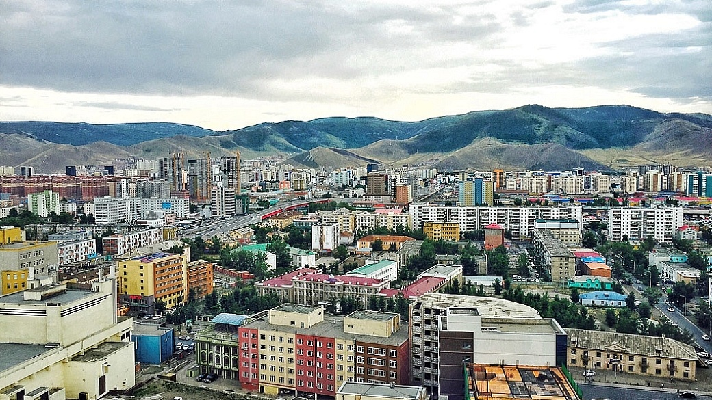
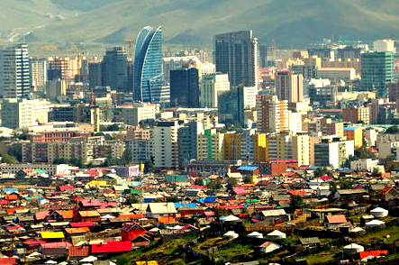

Ulaanbaatar
Location and Orientation
Ulaanbaatar is located in the north-eastern part of Mongolia and stretches from west to east along the banks of the Tuul River. The city spreads from east to west along a large wide valley. The main road through this valley is Enkh Taivny Orgon Choloo or Peace Avenue. The centre of the city is Sukhbaatar Square, from where all other distances are measured. Bogd Khan, Bayanzurkh, Chingeltei and Songino Khairkhan mountains surround the city. The Tuul river runs from east to west in the south of the city.
The city is divided into nine districts and many sub districts and microdistricts. More and more street name signs are being erected although taxi drivers and the locals tend to use the names of the districts or identifiable buildings to find locations. Some tourist signposts have recently been erected to help visitors get around. Useful landmarks include museums, banks, Sukhbaatar Square, the larger hotels, hospitals and restaurants.
Ulaanbaatar, capital city of Mongolia, is comparatively younger than the most of the capital cities in the world. It reflects both aspects of present day Mongolian society: nomadic culture and modern society. Here high rises stand next to traditional gers, and nomads in traditional costumes share the streets with business men in three piece suits. Cars and cows often cross paths in downtown streets.
The main street is the Peace Avenue, which goes through the center of the capital city. Along this avenue, there are numerous trade, entertainment and service centers. The capital city had been changed its name for several times from Orgoo into Ikh Huree, Niislel Huree and then Ulaanbaatar.
In the XIII century, Kharhorin was the capital city of the Mongol Empire. Its location is in the center of Mongolia, at the bank of Orkhon River, west at about 400 km from the present capital city Ulaanbaatar.
Since the collapse of the Mongol Empire founded by the great lord Chinggis Khaan, it scattered and political unification was lost. The Manchurian State wsa keen to occupy the Mongol Empire. That time, in 1639, Zanabazar, a son of one of the Mongol Khaans was honored as the head of the religion and a specific ger-palace was erected in an area and servants were appointed for him. It is considered that with this the foundation of Ulaanbaatar was laid. That time it was named Orgoo and consisted of gers for religious actions and gers for dwellings. This was suitable to the life of nomads.
Orgoo attracted seriously the attention of the masses as it was designed to be the center of Lamaism, a sect of Buddhism, which had started to spread. That time Orgoo was the center of Lamaism.
At the end of 1640s, traders from Russia, China and Tibet started to appear. In 1706, Orgoo changed its name to Ikh Huree. Since its foundation Ulaanbaatar has changed 20 times its location and moved from place to another one, because of unstable political situations.
There are some grounds that these movements were connected first, that the time was needed for Mongols who had nomadic style of life to become accustomed to a settled style of life. In other hand, they wanted the city to be located in the heart of the country, away from the influence of strangers, and to increase the influence of religion. In 1778, Ulaanbaatar moved to its present location behind the Khan Mountains and on the bank of the Tuul River.
Ikh Huree had been an important point of trade between the neighboring countries, Russia and China as it held a strategic geographical position.
Starting from the middle of the XIX century, Ikh Huree completely transformed into the settled style of life. It also had become the political center besides being the center for Lamaism. Since that time, constructed buildings increased in Ikh Huree.
Besides the wooden temples and monasteries, which were suitable for the nomadic lifestyle and easy to dismantle and assemble, temples, and monasteries suitable for the permanent settlement started to be built with wood, rocks and bricks in big numbers. Traditional ger forms in combination with the Chinese and Tibetan architecture formed the basis of their design.
Mongolian architects had accurately chosen the places of construction with its beautiful landscape and its surroundings.
The foundation of the Gandantegchilen monastery, an attractive site for foreign guests visiting Ulaanbaatar, was laid in 1833. That time, numerous temples and monasteries were built there.
By the middle of the XIX century, 15-20,000 residents permanently lived in Ikh Huree. In the eastern part of Ikh Huree, there was a Chinese trade center, which was called Maimaa Hot. Kunz and Muslim temples operated there.
More lately in 1860, the first Russian consul resided there and a protestant church was established. In this way, European culture had entered Mongolia. Besides the Russian and Chinese trade firms, Tibetan, English, American and German trade centers also operated in Ikh Huree.
At the result of the 1911 National Revolution for the country’s independence and the sweeping away the oppression of Manchurian Empire, which was lasted for over 200 years, sovereign Mongolia was established and the VIII Bogd Khaan was honored to be the head of the state and religion at the same time. And also the Ikh Huree was to be called as Niislel Huree and became the center of Mongolia’s politics, religion, culture and economy.
The influence of Buddhism was pivotal in the development of the capital city. Temples and monasteries were built in large numbers, but most of them do not exist today beacuse of seasonal hardship.
Thanks to the people’s revolution developed in 1921 Mongolia become free from domestic and foreign oppression. And in 1924, it was legalized that Ulaanbaatar was officially the capital city of the People’s Republic of Mongolia.
The new policy of the party and government and gratis assistance of brother and sister countries saw large constructional works organized in Ulaanbaatar. Its present image and appearance had been established in the short period of time since 1940. And Ulaanbaatar has been expanding to be the country’s political, religious, economical, industrial, trade, cultural and education, scientific and business center.
The 1990 Democratic Revolution was began in Ulaanbaatar and the People’s Republic of Mongolia was to be called Mongolia.
Ulaanbaatar has established friendly relationship with Denver, USA, Tokyo, Osaka and Satoro in Japan, Munich ,Germany, Florence, Italy, Saint Petersburg ,Russia, Tyanjin of China and Seoul of South Korea, and its social and economical new relations have been expanding.
As of 2016, Ulaanbaatar has become a big city with a population of about 1.345 million people and 9 districts and satellite cities.
You can meet people of various social stratum and livelihood. There are no ancient architectures in Ulaanbaatar as in European cities. The oldest architectural monument is aged 200 years. But you can see the top works with Mongolian architectural peculiarities created by Mongolian artists. Following the principle of seeing the attractive sites in the center of any state capital cities. The beautiful Bogd Khan Mountain, which is located in the southern side of the capital city, is considered the oldest protected area in the world because it was officially protected in 1778. There is also information that it might have been taken into the protection even in the XIII century.